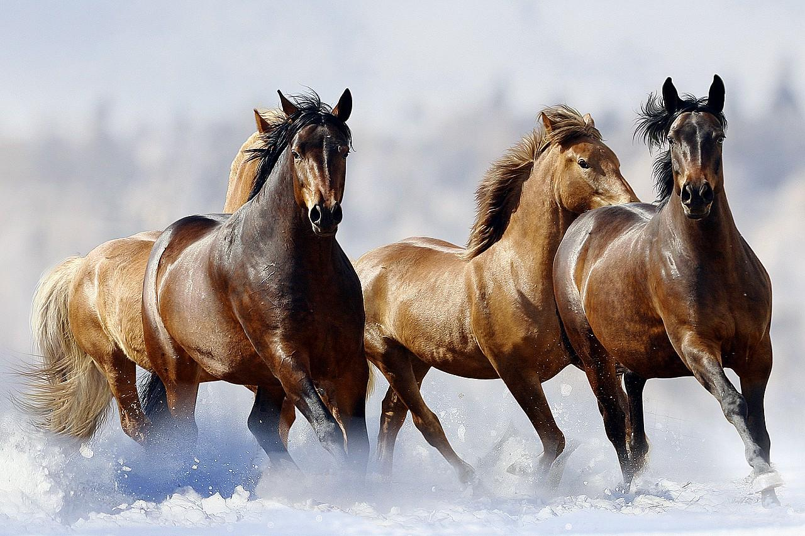

Livanjski divlji konji su konji koji žive na visoravni Krugu, na predjelu od Koričina do Borove glave.Ovo nisu izvorni divlji konji, nego su potomci domaćih konja koji su služili u poljodjelstvu. Nakon što ih je u toj ulozi potisla mehanizacija prije pedeset godina, ostavljeni su življeti divlje, jer više nije bilo potrebe za njima.Budući da skoro pola stoljeća nije postojala organizirana ljudska skrb za njih od strane države, dnevno prelaze desetke kilometara da bi se nahranili i napojili.Unatoč nepovoljnim vremenskim uvjetima, brojnim zvijerima iz obližnjih šuma, preživjeli su zahvaljujući bogatim pašnjacima.O ovim konjima se trudi skrbiti planinarsko ekološko društvo Borova Glava te općina Livno Procjene iz travnja 2011. govorile su o 196 konja.Prema podatcima iz 2013. godine bilo je 286 konja i 48 ždrijebadi.Prema podatcima iz srpnja 2015. bilo je 418 konja od toga 65 ždrijebadi.Prema procjenama od listopada 2018., broj im se kreće oko 800 grla.Od 2013. livanjski divlji konji zaštićeni su i zakonom.
Divlji konji na Bilima su konji koji žive na visoravni Bilima, 20-30 minuta vožnje iz Širokoga Brijega i Mostara. Kreću se u podnožju planine Čabulje točno između Širokoga Brijega i Mostara. Krdo ima više od stotinu konja u šest krda,do 150 konja. Žive pod otvorenim nebom izloženi divljem utjecaju prirode. Ljeti im je problem nedostatak vode (i hrane) ,a zimi hrana. Također su nekad veliki problem neljudi koji su iz obijesti ubijali konje. Cijelo su vrijeme veliki problem vukovi koji su se namnožili te ih na ovom istom području ima 25 jedinki (najviše napadaju ždrijebad)! Za pomoći divljim konjima angažirala se je skupina zaljubljenika. Za prehranu su napravili hranilicu kod Misišta. Novac su pribavili od sredstava prodaje kalendara s motivima konja s Bila koje je fotografirao Ivan Kelava dok su pojila napravljena u suradnji s lovačkim društvom te o svom trošku i uz pomoć drugih ljudi. Volonterska skupina, koju nitko ne financira osim njih samih, konjima zimi za prehranu nose kruh jer je cijen, premda nije nije najbolja hrana za konje; najbolje bi bilo dati im kukuruz i zob. Danas divlji konji s Bila privlače izletnike i zabljubljenike u prirodu i životinje. Ovo nisu izvorni divlji konji, nego su slično kao i kod livanjskih, ovo potomci domaćih radnih konja koji su služili u poljodjelstvu. Nakon što ih je u toj ulozi potisla mehanizacija prije pedeset godina, ostavljeni su življeti divlje, jer više nije bilo potrebe za njima.